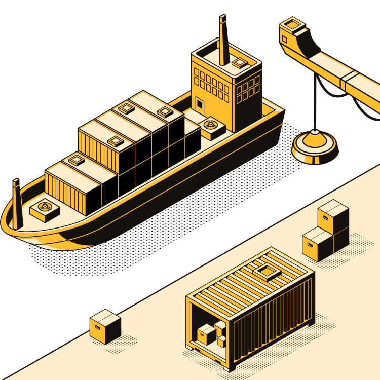

LokiCorp Import Export.
Une société de Sourcing experte en négociation de produits de l'Extrême-Orient.

Une société de Sourcing experte en négociation de produits de l'Extrême-Orient.
LokiCorp Import Export est une société basée au Kekistan specialisée dans la vente et le Sourcing de produits de l'Extrême-Orient vers les pays francophones. Fondée en 2020 nous exportons des produits dans plus de 27 pays sur les quatre continents. De l’Afrique centrale au Canada en passant par la France et la Thaïlande. Nous avons su nous placer comme repère de confiance pour nos clients, dans le choix des produits et des réglementations d’importation.
Nous identifions vos besoins et concevons avec vous un nouveau produit.
Nous cherchons des fournisseurs compétents, qualifiés et compétitifs sur les marchés émergents d'Asie.
Les fournisseurs sont managés par notre équipe locale et soutenus par nos ingénieurs.
À chaque étape, nous nous assurons que votre produit est conforme à ce que vous avez commandé.
Depuis le début de la pandémie COVID-19, nous proposons au plus grand nombre, des produits barrage au Coronavirus et ce dans un délai très court ! Nous sommes reconnus par de nombreux clients comme des partenaires de qualité même lorsque ces produits sont en pénurie totale dans les pays touchés.